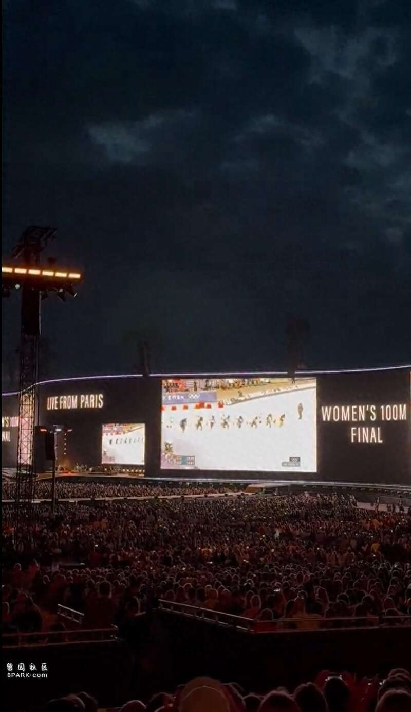
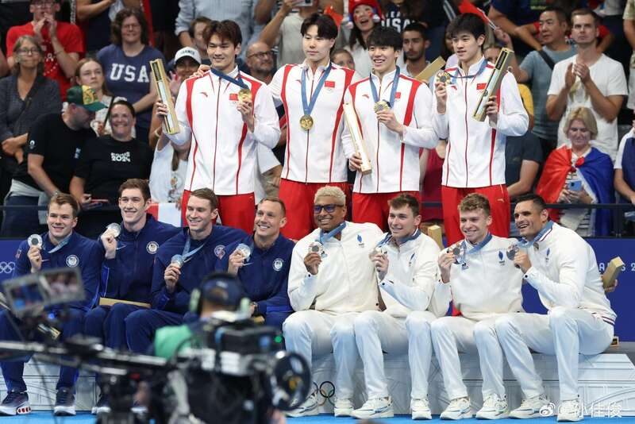
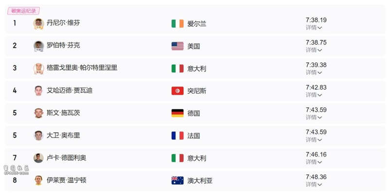
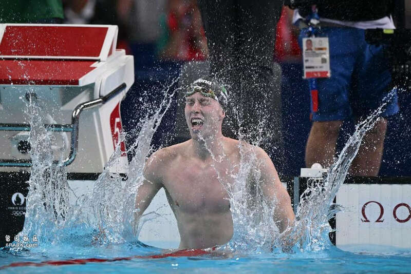
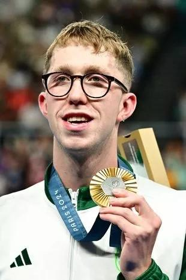
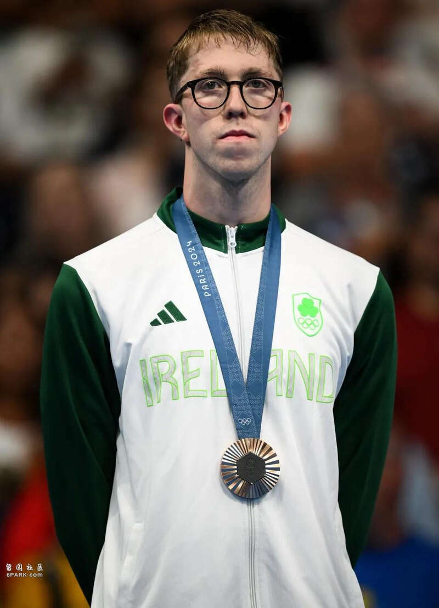
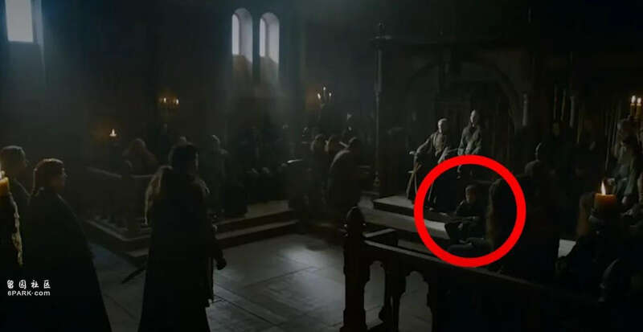
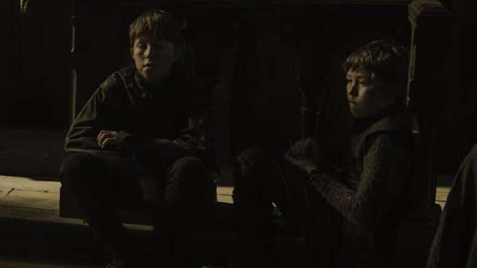
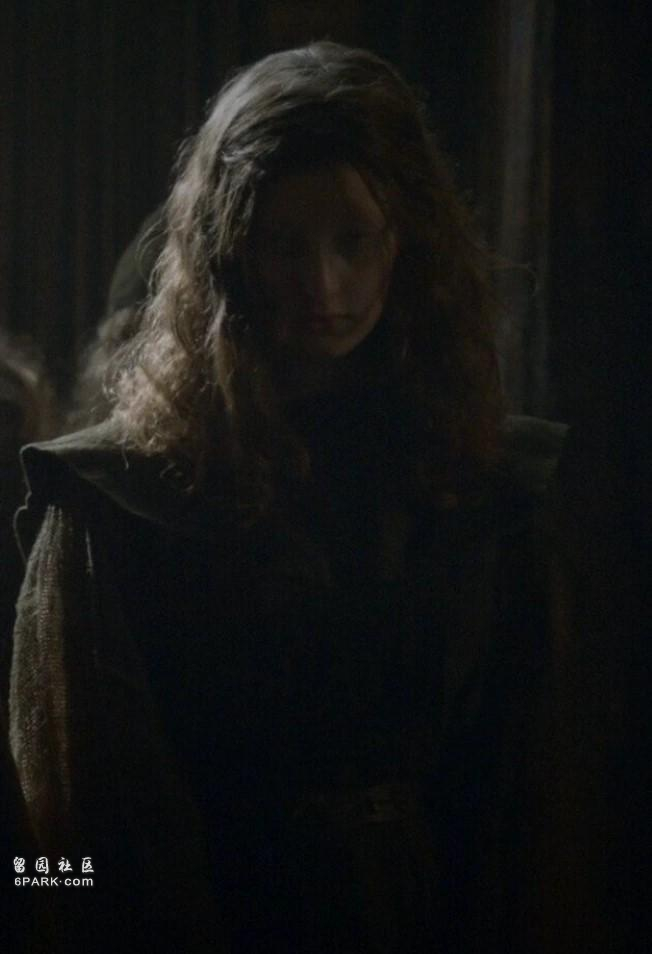
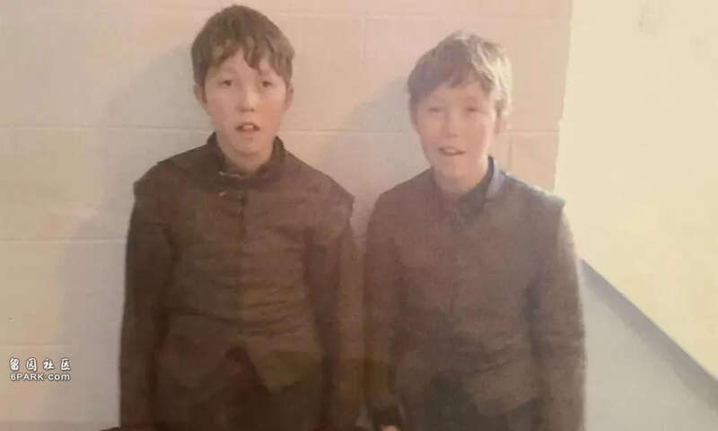

巴黎奥运会正如火如荼地进行中，顶级运动员之间的较量，吸引了全世界民众的目光。
连阿黛尔都忍不住在演唱会中间“插播”比赛，和在场所有粉丝一起围观了女子100米短跑。

（阿黛尔德国演唱会用大屏幕直播比赛）
近几天，游泳项目的比赛成绩尤其振奋人心。本届奥运会又创造了不少新的历史。
北京时间5日凌晨，中国队在男子4×100米混合泳接力决赛中，以3分27秒46的好成绩夺得了金牌，打破了美国对该项目长达40年的垄断，创下了又一值得载入历史的难忘瞬间。

（取得冠军的四名队员：徐嘉余、覃海洋、孙佳俊、潘展乐）
而除了中国外，爱尔兰在本届奥运会的游泳项目中，也取得了亮眼的突破。
在7月31日举行的男子800米自由泳决赛中，23岁的爱尔兰队选手丹尼尔·威芬（Daniel Wiffen），打败了美国选手鲍比·芬克，以及连续三届在奥运会上夺得奖牌的意大利老将帕尔特里涅里，以7分38秒19的好成绩拿下冠军，并打破了乌克兰选手米哈伊洛·罗曼丘克（ROMANCHUK Mykhailo）于东京奥运会创下的纪录7分41秒28。

（图片来自网络）
比赛过程惊心动魄，威芬一度领先、又落后，最终奋起直追重新超越对手……

（威芬赢得800米决赛）
这块金牌意义重大，威芬由此成为了爱尔兰史上第一位获得奥运金牌的男子游泳选手，也是近36年以来，第一位获得过奥运金牌的爱尔兰运动员。
（其实威芬出生于利兹市，后搬到北爱尔兰居住，而北爱尔兰运动员可以自由选择代表爱尔兰还是英国出战，他选的爱尔兰。）
爱尔兰人都沸腾了，总统迈克尔·希金斯夸赞这是“一项了不起的成就，我为此感到自豪”，爱尔兰总理西蒙·哈里斯也在X（前推特）上表示：整个国家的人都对着电视和电脑屏幕尖叫到喉咙嘶哑。

（威芬获得男子800米自由泳决赛冠军）
颁奖时，当爱尔兰国歌响起，威芬站在领奖台上激动不已。
“这意味着所有，今晚整个国家都在支持我。”
“这是一个特殊的时刻，我人生中每天都在梦想着这一刻。以前我从未在奥运会上听过国歌，站在领奖台上的人是我，这太疯狂了。”
（威芬获得男子800米自由泳决赛冠军）
不过这还不是全部，北京时间5日凌晨结束的男子1500米自由泳决赛中，威芬又以14分39秒63的成绩夺得了一枚铜牌，并再次创下了一项纪录 ——爱尔兰队自1996年后，首位在同届运动会上获得一枚以上奖牌的运动员。

（威芬又在1500米自由泳决赛中获得了铜牌）
接连夺下两枚奖牌，威芬一夜之间变成了明星选手、人气暴涨。
很多喜欢他的人去网上搜索他的履历，这才发现今年2月份，他还获得过世界游泳锦标赛男子800米和1500米自由泳的冠军，一直被寄予厚望。
除此之外，他还被扒出有过一段令人意想不到演戏经历 ——曾在大热美剧《权力的游戏》中担任临时演员。

（威芬在《权游》中当过临时演员）
2013年，威芬和他的双胞胎兄弟Nathan一同参演了《权游》第三季，恰好就是最著名的《血色婚礼》那集。
不过毕竟是临时演员，兄弟俩唯一的戏份就是坐在台阶上充当背景板。

（兄弟二人担任群演）
此外，他们的姐姐也在《权戏》中得到了一个角色，饰演瓦德·佛雷的孙女Neyela Frey，镜头更多一些。

（威芬的姐姐Elizabeth也出演了《权游》）
回忆起那段经历，威芬表示自己小时候并不知道《权游》这部剧，因为父母不让他看。
不过这对他而言依旧是很酷的经历，他也很享受其中，当时包括基特·哈灵顿（雪诺的扮演者）在内，所有的演员都对他们非常友好，他们还可以在摄影棚里随意参观。
后来2022年的一次采访中，威芬还表示希望有机会参演《权游》的衍生剧《龙之家族》，看样子对演戏依旧怀抱热情，只不过遗憾未收到邀请……

（图左：威芬，图右：Nathan）
不过，没能以演员身份成名也没关系，如今威芬用奥运奖牌证明了自己。
接下来他还将参加男子马拉松游泳项目，上届奥运会的前三名将跟他一同竞争，不知到时威芬能否再次创造历史……